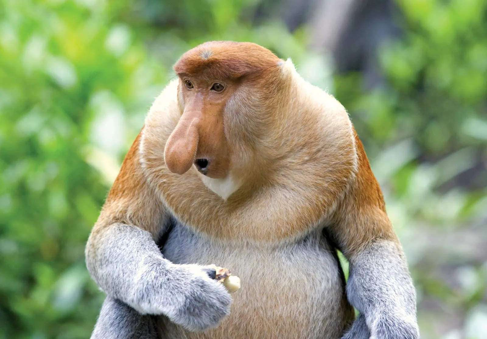

1 / 6

Simiiforme Monkey
4 / 6

Gorilla Monkey/div>
5 / 6

Simiiforme Monkey
6/ 6

Proboscis Monkey
❮
❯
Monkeys are one of the most popular exotic pets across the world. There is a large inter-continental black-market excahnge for monkeys. Monkeys are primarily taken from their homes in parts of Africa and South America, where they primarily reside. Animal poachers take these monkeys from their homes, to sell them to a mostly upper-class cliental.